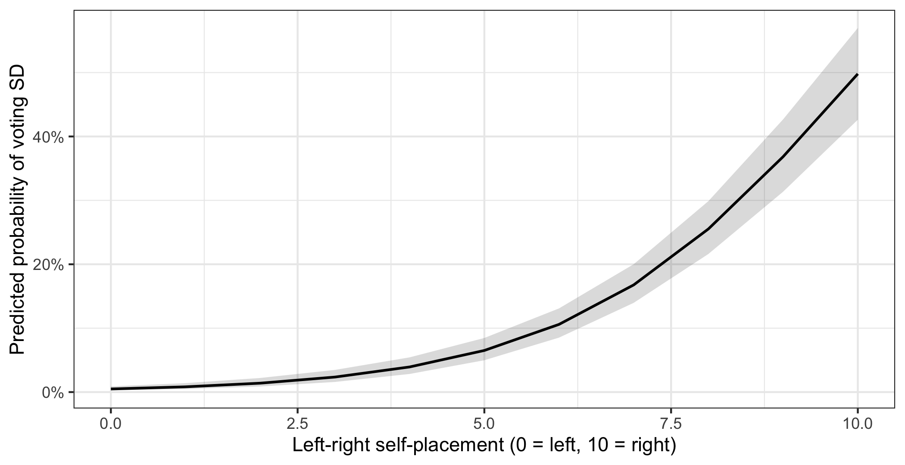

library(ggplot2)
library(dplyr)
library(psych)
library(ggeffects)
swe <- readRDS("data/swe.rds")
trust_items <- c(
"tr_parl", "tr_govt", "tr_court",
"tr_sci", "tr_party", "tr_media"
)
swe$trust <- fa(swe[, trust_items], nfactors = 1, fm = "ml")$scores[, 1]
swe$sex <- factor(
swe$female,
levels = c(0, 1),
labels = c("Men", "Women")
)15 Logistic regression
The last session, and it closes a thread that has run through the whole course.
Sessions 4, 12 and 14 all ran into the same thing: a straight line does not know that a scale has ends, so it will happily predict values that cannot exist. Every time, the answer was “be careful near the edges”. This week the outcome is nothing but edges, and being careful is no longer enough.
15.1 A binary outcome
Who voted for the Sweden Democrats? The outcome vote_sd is 1 for SD voters and 0 for everyone else who voted.
table(swe$vote_sd, useNA = "ifany")##
## 0 1 <NA>
## 1998 336 511336 of 2334 voters, about 14.4%.
There is nothing stopping you putting that straight into lm(). The result even has a name — a linear probability model — and it is occasionally used on purpose.
linear_model <- lm(vote_sd ~ trust + lr_self + sex + educ, data = swe)
round(coef(summary(linear_model)), 4)## Estimate Std. Error t value Pr(>|t|)
## (Intercept) 0.0767 0.0262 2.9305 0.0034
## trust -0.0752 0.0080 -9.3572 0.0000
## lr_self 0.0421 0.0025 16.5587 0.0000
## sexWomen -0.0346 0.0145 -2.3864 0.0171
## educ -0.0225 0.0037 -6.1644 0.0000Perfectly reasonable-looking output. Now ask it what it believes.
predicted_p <- predict(linear_model)
range(predicted_p)## [1] -0.2908304 0.6279780sum(predicted_p < 0 | predicted_p > 1)## [1] 401The model predicts a negative probability for some respondents, and 401 cases fall outside 0 and 1 altogether.
This is the session 4 point in its sharpest form. A probability is bounded at 0 and 1, hard limits, no exceptions. A straight line is unbounded. Fit one to the other and impossible predictions are not a risk at the edges — they are guaranteed.
15.2 The fix, in words
The problem is a mismatch: the outcome lives on a scale with two ends, and a linear model needs a scale with none. So change the scale.
Step one: from probability to odds. Odds are the probability of something happening divided by the probability of it not happening, as in session 7. A probability of 0.5 is odds of 1; a probability of 0.9 is odds of 9. Odds have a floor at zero but no ceiling — they run from 0 to infinity. One end of the problem is gone.
Step two: from odds to log odds. Take the logarithm. Odds of 1 become 0, odds above 1 become positive, odds below 1 become negative. Now the scale runs from minus infinity to plus infinity, with no ends at all.
That is a scale a straight line can live on. So the model fits a straight line to the log odds:
\[\log\left(\frac{p}{1-p}\right) = \beta_0 + \beta_1 x_1 + \beta_2 x_2 + \dots\]
and then converts back. The conversion is what gives logistic regression its S-shape: a straight line in log odds becomes a curve in probability that flattens as it approaches 0 and 1, and never reaches either.
That curve is doing exactly what session 4 said a relationship with a bounded outcome has to do. Logistic regression is a limit built into a model rather than apologised for afterwards.
The price is that the coefficients are now in log odds, and nobody thinks in log odds. Most of this chapter is about getting back to something readable.
15.3 Fitting it
model <- glm(
vote_sd ~ trust + lr_self + sex + educ,
data = swe,
family = "binomial"
)
summary(model)##
## Call:
## glm(formula = vote_sd ~ trust + lr_self + sex + educ, family = "binomial",
## data = swe)
##
## Coefficients:
## Estimate Std. Error z value Pr(>|z|)
## (Intercept) -3.87949 0.35332 -10.980 < 2e-16 ***
## trust -0.77389 0.08791 -8.803 < 2e-16 ***
## lr_self 0.53118 0.03895 13.638 < 2e-16 ***
## sexWomen -0.47770 0.15866 -3.011 0.00261 **
## educ -0.24641 0.04180 -5.895 3.75e-09 ***
## ---
## Signif. codes: 0 '***' 0.001 '**' 0.01 '*' 0.05 '.' 0.1 ' ' 1
##
## (Dispersion parameter for binomial family taken to be 1)
##
## Null deviance: 1581.6 on 1921 degrees of freedom
## Residual deviance: 1090.2 on 1917 degrees of freedom
## (923 observations deleted due to missingness)
## AIC: 1100.2
##
## Number of Fisher Scoring iterations: 6glm() is the generalised linear model — the same formula notation as lm(), plus a family argument saying what kind of outcome it is. "binomial" means binary.
The output is nearly the same shape as lm(). The differences:
- The test statistic is
z valuerather thant value, and the logic is unchanged: estimate over standard error. - There is no R-squared, and no F-test. Instead there are deviances, which we come to below.
Estimateis in log odds, which is why none of the numbers look like anything.
The signs are readable even if the sizes are not. Trust is negative, so more trusting people are less likely to vote SD. Left-right placement is positive: further right, more likely. Women are less likely than men. More education, less likely.
15.4 Odds ratios
The first step towards readability. Exponentiating a log-odds coefficient turns it into an odds ratio — the same quantity as in session 7.
odds_ratios <- exp(cbind(
OR = coef(model),
confint.default(model)
))
round(odds_ratios, 3)## OR 2.5 % 97.5 %
## (Intercept) 0.021 0.010 0.041
## trust 0.461 0.388 0.548
## lr_self 1.701 1.576 1.836
## sexWomen 0.620 0.454 0.846
## educ 0.782 0.720 0.848exp() undoes log(). confint.default() builds the interval from the standard errors, and cbind() glues the estimate and the interval into one table before the whole thing is exponentiated — the interval has to be transformed on the log scale and then converted, not the other way round.
Reading them:
lr_self= 1.70. Each one-point move to the right on the 0-10 scale multiplies the odds of voting SD by about 1.70 — a 70% increase in the odds.trust= 0.46. One standard deviation more trust multiplies the odds by 0.46, roughly halving them.sexWomen= 0.62. Women’s odds are about 0.62 times men’s.
An odds ratio of 1 means no effect, so an interval containing 1 is the equivalent of a coefficient whose interval contains zero.
Odds ratios are multiplicative. They do not add up and they are not symmetric: an odds ratio of 2 and one of 0.5 are the same size of effect in opposite directions. This is also why the confidence intervals are lopsided.
And the warning from session 7 still stands. An odds ratio is not a ratio of probabilities. 1.70 times the odds is not 1.70 times as likely.
15.5 Predicted probabilities
The version to show a reader. Odds ratios are precise and hard to picture; probabilities are what people actually understand.
probs <- predict_response(model, terms = "lr_self [0:10 by=1]")
probs## # Predicted probabilities of vote_sd
##
## lr_self | Predicted | 95% CI
## --------------------------------
## 0 | 0.00 | 0.00, 0.01
## 1 | 0.01 | 0.00, 0.01
## 3 | 0.02 | 0.02, 0.03
## 4 | 0.04 | 0.03, 0.05
## 5 | 0.07 | 0.05, 0.08
## 6 | 0.11 | 0.09, 0.13
## 7 | 0.17 | 0.14, 0.20
## 10 | 0.50 | 0.43, 0.57
##
## Adjusted for:
## * trust = 0.11
## * sex = Men
## * educ = 5.51plot(probs) +
labs(
x = "Left-right self-placement (0 = left, 10 = right)",
y = "Predicted probability of voting SD",
title = NULL
) +
theme_bw()
There is the S-curve. And there is the thing that makes it worth the trouble: the effect of a one-point move is not constant.
probs |>
as.data.frame() |>
select(lr_self = x, probability = predicted) |>
mutate(change = c(NA, round(diff(probability), 3))) |>
round(3)## lr_self probability change
## 1 0 0.005 NA
## 2 1 0.008 0.003
## 3 2 0.014 0.006
## 4 3 0.024 0.010
## 5 4 0.039 0.016
## 6 5 0.065 0.026
## 7 6 0.106 0.041
## 8 7 0.168 0.062
## 9 8 0.255 0.088
## 10 9 0.368 0.113
## 11 10 0.498 0.130Moving from 2 to 3 on the left-right scale barely changes anything. Moving from 7 to 8 changes a great deal. A single odds ratio contains that information, but only implicitly; the plot shows it.
This is the payoff for the whole apparatus. A linear model would have insisted the change was the same everywhere and predicted negative probabilities at one end. The logistic model bends, and stays inside the limits by construction.
A question. The steepest part of the curve is in the middle, around a predicted probability of 0.5, and it flattens towards both ends.
Why must that be true of any model whose outcome is a probability? Relate your answer to the anchor points and approaches to limits from session 4.
15.6 How good is the model?
There is no R-squared. Several substitutes exist, all called pseudo R-squared, and none of them means what R-squared means.
pscl::pR2(model)["McFadden"]## fitting null model for pseudo-r2## McFadden
## 0.31069McFadden’s is the most commonly reported. It is built from the deviances in the model output: Null deviance is how badly a model with no predictors does, Residual deviance how badly ours does, and the measure is how much of that gap we closed.
0.311 is respectable — for McFadden, values above about 0.2 are usually considered a good fit, which is a different scale from ordinary R-squared and should never be reported as though it were the same thing.
15.6.1 Classification, and its trap
The other way to judge a binary model is to ask how often it gets the answer right. Predict SD if the probability is above 0.5, and compare.
predicted_class <- ifelse(fitted(model) > 0.5, 1, 0)
actual <- model$model$vote_sd
confusion <- table(Predicted = predicted_class, Actual = actual)
confusion## Actual
## Predicted 0 1
## 0 1587 191
## 1 59 85accuracy <- sum(diag(confusion)) / sum(confusion)
accuracy## [1] 0.8699272fitted() gives the predicted probability for every case the model was fitted on, and diag() takes the diagonal of the table — the cases the model got right. 87.0% correct sounds excellent.
Now compare it with the laziest possible model: predict that nobody voted SD.
max(table(actual)) / length(actual)## [1] 0.856399685.6% correct, from a model with no variables in it at all.
Our model, with four highly significant predictors and a respectable pseudo R-squared, beats guessing by about one and a half percentage points.
The reason is in the table:
sensitivity <- confusion[2, 2] / sum(confusion[, 2])
specificity <- confusion[1, 1] / sum(confusion[, 1])
round(c(sensitivity = sensitivity, specificity = specificity), 3)## sensitivity specificity
## 0.308 0.964Sensitivity is the share of actual SD voters the model catches: 30.8%. Specificity is the share of non-SD voters it correctly leaves alone: 96.4%.
The model is excellent at saying no and poor at saying yes. That is what happens when an outcome is rare — a threshold of 0.5 is rarely crossed, so almost everyone gets predicted into the larger category, and accuracy is high because the larger category is large.
Never report accuracy without the baseline. With an outcome that occurs 15% of the time, any model that reports less than 85% accuracy is doing worse than saying nothing. Report sensitivity and specificity too, and say what threshold you used — 0.5 is a convention, not a law, and lowering it trades specificity for sensitivity.
15.7 And that is the course
Look back at what the last session did.
The outcome was bounded, so a straight line was the wrong shape — session 4. The fix was to change the scale until it was unbounded, fit the line there, and convert back. Reading the result meant getting from log odds to odds ratios to probabilities, because each step is more interpretable than the last — session 12. Judging it meant knowing what the number would be if the model were useless — session 6.
None of that is specific to logistic regression. It is what you do with any model: know what your scales can and cannot do before you fit anything, get the results into units a reader can hold, and compare every number against what it would be if nothing were going on.
How to write it up.
A logistic regression predicting Sweden Democrat voting (n = 1922) found that right-wing self-placement was the strongest predictor: each additional point on the 0-10 left-right scale multiplied the odds of voting SD by 1.70 (95% CI [1.58, 1.84], p < .001). Trust in institutions had the opposite association (OR = 0.46, 95% CI [0.39, 0.55]), as did education (OR = 0.78). Women were less likely to vote SD than men (OR = 0.62). McFadden’s pseudo R² was 0.31. Predicted probabilities ranged from below 0.00 at the left of the scale to 0.50 at the right (Figure 1).
Report odds ratios with intervals, and give predicted probabilities for the variable your argument is about. Mistakes to avoid:
- Reporting raw coefficients without saying they are log odds, or leaving them uninterpreted.
- Calling an odds ratio a probability ratio. Still the commonest error in this whole area.
- Reporting pseudo R² as though it were R². Say which one it is; the conventions are different.
- Reporting classification accuracy without the baseline.
- Ignoring sensitivity when the outcome is rare. A model that never predicts the event can still be 85% accurate.
- Forgetting that the effect of a predictor depends on where you are on the curve. There is no single “effect on probability”.
- Using a linear probability model without saying why, or without checking how many predictions fall outside 0 and 1.
In the seminar. swirl lesson 15 Logistic Regression. Why a straight line fails, fitting a glm(), odds ratios, predicted probabilities, and judging the fit. Around 30 minutes.